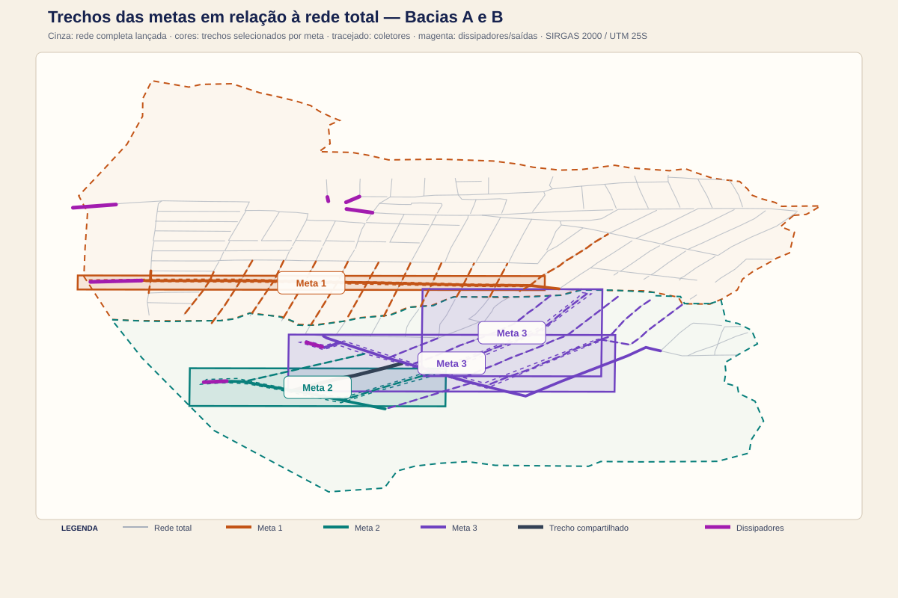

7.1 Modelo de Plano de Trabalho
6.1.1 Finalidade
Instruir a elaboração do Plano de Trabalho de Reconstrução do Município de Conde/PB, priorizando as áreas afetadas por processos erosivos e escoamentos concentrados e organizando intervenções capazes de reduzir o risco sem fragmentar a compreensão da bacia.
O plano deverá distinguir:
- a reconstrução ou implantação de trechos críticos, que pode ser objeto de metas específicas;
- a concepção integrada da drenagem das bacias A e B, necessária para verificar se cada intervenção tem continuidade hidráulica;
- a contratação posterior de levantamento, projeto básico e projeto executivo, quando a precisão exigida superar a base preliminar disponível.
6.1.2 Escopo preliminar
O enquadramento recomendado para o Plano é o de reconstrução resiliente, sustentável e adaptada à mudança climática. Isso significa que os trechos selecionados devem reduzir o risco observado, manter coerência com a bacia inteira, admitir manutenção e ser testados contra mais de uma premissa de chuva. A execução será focalizada, mas a justificativa será sistêmica: cada meta deverá indicar a contribuição que recebe, o risco que reduz, a descarga que utiliza e as condições de adaptação ou reforço futuro.
O Plano de Trabalho não incluirá, nesta etapa, a implantação de toda a rede municipal. A estratégia preliminar é concentrar recursos nos troncos principais e dissipadores associados aos setores mais afetados, complementando-os com os coletores indispensáveis para que a solução funcione e seja verificável hidraulicamente.
Essa delimitação não significa tratar os trechos isoladamente. Cada meta deverá ser avaliada no contexto da bacia contribuinte, do caminho de escoamento superficial, da capacidade a jusante e da manutenção futura. Uma obra que apenas transfira a erosão ou o alagamento para o trecho seguinte será considerada solução incompleta.
6.1.3 Evidências e setores a confirmar
O inventário de trabalho atualmente disponível contém:
| Evidência | Situação no projeto | Uso previsto |
|---|---|---|
Conde_Pontos_metas.kmz |
convertido para 12 pontos em SIRGAS 2000 / UTM 25S | referência para metas a conferir em campo |
pontos_erosao_fotos_conde.kmz |
9 pontos com registro fotográfico e coordenadas | evidência de ocorrências; requer validação e vínculo com as bacias A/B |
TrechosDissipacao.shp |
5 linhas em EPSG:31985, com campo Id igual a 0 em todas as feições |
referência da Bacia A; definir conexão, sentido e parâmetros hidráulicos |
Trechos_Dissipacao_B.shp |
2 linhas em EPSG:31985 | saídas preliminares da Bacia B; validar conexão, sentido e estrutura |
| Bacias A e B | limites e revisões D8 disponíveis no pacote GIS | recorte territorial e controle da continuidade |
| MDT híbrido e curvas integradas | disponíveis em EPSG:31985 | leitura preliminar de cotas, declividades e caminhos de escoamento |
| Diagnóstico municipal REC-PB-2504603-20260802-01 | relatório local com ocorrências, mapas, propostas e orçamento preliminar | cruzar metas, coordenadas, extensões, saídas e população afetada com o GIS/SWMM |
O registro detalhado da conferência está em inventario_pontos_criticos.json. Quatro linhas coincidem exatamente com nós de saída provisórios da rede; uma delas se aproxima do nó N_A_0195, mas requer revisão de snap. A camada ainda não foi incorporada automaticamente ao SWMM.
Evidência de suscetibilidade e recorte das metas
O mapa de suscetibilidade à erosão e o cruzamento espacial das marcações originais mostram que 10 dos 12 pontos de metas estão dentro das Bacias A ou B. Quatro pontos — 3i, 3f, 6i e 6f — coincidem diretamente com as manchas originais de suscetibilidade alta e/ou média. Os pontos 5i e 5f estão na Bacia A, mas fora dessas manchas; os pontos 1i, 1f, 2f e 2i - foto? estão na Bacia B e precisam ser reavaliados após o lançamento da rede. Os pontos 4i e 4f estão fora do recorte A+B.
Esse resultado sustenta a priorização, mas não converte automaticamente as marcações originais em metas de obra. A seleção deverá combinar suscetibilidade, erosão observada, fluxo superficial, criticidade hidráulica no SWMM, população/infraestrutura protegida, condição de jusante e viabilidade de implantação. O quadro detalhado está em evidencia_suscetibilidade/pontos_suscetibilidade_e_metas.csv.
Conferência da cobertura da rede
O modelo nodal preliminar possui 16 componentes conectados e 40 saídas provisórias. Os cinco trechos de dissipação se associam preliminarmente aos componentes 16, 15, 2, 9 e 3. Portanto, a afirmação de que toda a água coletada deverá sair por um desses trechos será adotada como regra de concepção, mas ainda não como resultado verificado: os outros 11 componentes precisam ser conectados a esses exutórios, receber uma saída própria justificada ou ser eliminados após a revisão da rede.
Na Bacia B, a primeira rodada possui dois componentes conectados, 46 links totais incluindo os dois dissipadores e três saídas SWMM. Os trechos DISS_B_01 e DISS_B_02 foram associados a O_B_DISS_01 e O_B_DISS_02; a vazão de chegada foi calculada, mas a estrutura física de dissipação continua pendente de detalhamento.
Os 12 pontos de metas têm identificações originais como 1i, 1f, 2i - foto?, 2f, 3i, 3f, 4i, 4f, 5i, 5f, 6i e 6f. A nomenclatura sugere pares início/fim, mas não será interpretada como definição hidráulica final sem conferência espacial, fotográfica e de campo.
6.1.4 Metas preliminares do Plano de Trabalho
| Código | Meta proposta | Produto verificável | Condição de aceite |
|---|---|---|---|
| M-01 | Validar os pontos críticos, os pares de início/fim e a relação com as bacias A e B | mapa de ocorrências e ficha de campo | coordenadas, fotos, causa provável, risco a jusante e prioridade registrados |
| M-02 | Consolidar a concepção integrada da drenagem das bacias | planta de bacias, caminhos de escoamento e rede proposta | continuidade entre contribuição, tronco, coletor, dissipador e exutório |
| M-03 | Recuperar ou implantar troncos principais nos setores prioritários | projeto/anteprojeto dos trechos selecionados | seção, material, cota, declividade, capacidade e interferências definidos |
| M-04 | Implantar ou complementar coletores indispensáveis aos troncos | cadastro de coletores e ligações | áreas de contribuição e nós de entrada vinculados ao modelo |
| M-05 | Implantar dissipadores nos pontos de descarga que apresentem energia ou desnível incompatível | solução conceitual de dissipação por ponto | vazão de projeto, desnível, comprimento, largura, número de degraus e proteção a jusante verificados |
| M-06 | Avaliar a suficiência hidráulica das metas no SWMM | arquivos .inp, cenários e relatório de resultados |
balanço de massa, sobrecargas, alagamentos e condições de jusante revisados |
| M-07 | Preparar a contratação do projeto básico/executivo | termo de referência e pacote de dados | escopo, levantamentos, sondagens, produtos, responsabilidades e critérios de medição definidos |
Os códigos M-01 a M-07 são objetivos transversais de preparação do Plano; não devem ser confundidos com as três metas administrativas de implantação detalhadas a seguir. Nenhum deles corresponde ainda a um quantitativo de obras nem autoriza a execução física.
6.1.4.1 Seleção espacial executada para as metas
Foi recebida a camada MetasSelecionadas.shp, em SIRGAS 2000 / UTM 25S (EPSG:31985), com quatro polígonos desenhados para delimitar os setores de interesse. Como o campo original Id estava zerado em todas as feições, eles foram identificados como META_01 a META_04 apenas para rastreabilidade. Nesta revisão, a organização administrativa passa a ter três metas: a antiga META_04 passa a ser a Meta 1; a antiga META_02 passa a ser a Meta 2; e as antigas META_01 e META_03 são fundidas na Meta 3. Os códigos originais permanecem nos arquivos GIS e no quadro de auditoria.
A seleção dos trechos foi feita por interseção espacial com comprimento linear superior a 0,01 m. Assim, foram selecionados os segmentos que efetivamente atravessam cada polígono; um simples contato pontual com o limite não foi suficiente. Para cada segmento selecionado foram preservados o identificador do link, a classe (tronco/coletor), os nós de início e fim, as coordenadas métricas dos extremos, o comprimento total cadastrado, o comprimento dentro do polígono, cotas, declividade, diâmetros atual e preliminares, vazões TR25/TR50, velocidades, criticidade e status da rodada SWMM.
Para a indicação do Plano, a classe hidráulica foi mantida explicitamente. Os troncos são os eixos principais de transporte; os coletores são os trechos que captam ou conduzem as contribuições locais até esses eixos; os nós representam entradas, encontros e mudanças de seção; e os dissipadores representam os trechos de descarga que precisam controlar energia e erosão a jusante. Assim, cada meta pode ser lida no mapa e auditada nas camadas e na tabela, sem perder a relação entre o trecho selecionado e os elementos que fazem a solução funcionar.

Figura 6.1.4.1-2 — Mapa interativo das metas. Use o controle de camadas no canto superior direito para alternar entre satélite e ruas e para ligar ou desligar a rede fora das metas, a Meta 1, a Meta 2, a Meta 3, os dissipadores e os polígonos de auditoria. Use os botões + e −, a roda do mouse ou o gesto de pinça para aproximar e afastar. A rede fora das metas aparece em cinza tracejado; cada meta usa uma cor própria; dentro de cada cor, linhas contínuas representam troncos e linhas tracejadas representam coletores. Os dissipadores/saídas permanecem em magenta. A seleção analítica continua baseada nos polígonos originais preservados para ArcMap/QGIS.
Para uso no Google Earth Pro, estão disponíveis o KML consolidado e o KMZ consolidado, com a rede completa em contexto, trechos destacados por meta, bacias, dissipadores, envelopes de apresentação e polígonos originais para auditoria. Também foram preparados arquivos individuais da Meta 1, Meta 2 e Meta 3. O link compartilhado L_B_0022 permanece nas duas metas individuais correspondentes.
| Meta | Bacia | Área do polígono (ha) | Trechos associados | Extensão total dos segmentos (m) | Extensão dentro do polígono (m) | Nós | Dissipadores | Dprop preliminar (m) | Dreq TR25/TR50 máx. (m) | Q25/Q50 máx. (m³/s) | Trechos críticos* |
|---|---|---|---|---|---|---|---|---|---|---|---|
Meta 1 (META_04) |
A | 1,73 | 45 | 5.193,12 | 1.108,53 | 19 | 1 | 0,30–1,20 | 0,962 / 1,025 | 4,629 / 5,076 | 26 |
Meta 2 (META_02) |
B | 1,53 | 8 | 1.402,93 | 665,45 | 6 | 1 | 0,40–1,50 | 1,203 / 1,206 | 7,133 / 7,705 | 5 |
Meta 3 (META_01 + META_03) |
B | 3,34* | 18 | 5.074,34 | 1.073,53 | 21 | 1 | 0,40–1,20 | 0,960 / 0,960 | 5,039 / 5,199 | 10 |
| Total | A+B | 6,60** | 71 | 11.670,39 | 2.847,51 | 46 | 3 | — | — | — | 43 |
* O total de 71 corresponde às associações de trechos nas metas; há 70 ID_LINK físicos únicos porque L_B_0022 é compartilhado entre as Metas 2 e 3. As extensões do quadro são somas por associação; a extensão física única correspondente é aproximadamente 11.356,21 m. As extensões e os nós da Meta 3 foram calculados sem dupla contagem interna dos três links presentes simultaneamente nos polígonos originais. **A área de 3,34 ha da Meta 3 é a soma das áreas-fonte; a área da união geométrica ainda não foi determinada. A extensão dentro do polígono é apresentada para auditoria e não deve ser usada automaticamente como extensão de projeto.
O resumo administrativo das três metas, a tabela administrativa por trecho e o quadro de etapas registram a nova organização. A tabela-fonte original e a tabela original por trecho continuam disponíveis para auditoria. O pacote GIS completo contém os shapefiles originais; os GeoJSONs da nova classificação estão na página de dados.
6.1.4.2 Metas administrativas e etapas de implantação
Para transformar a seleção espacial em uma estrutura de Plano de Trabalho, os quatro polígonos de origem foram reorganizados em três metas administrativas. Esta decisão não apaga a seleção original: ela apenas agrupa os trechos e os componentes em conjuntos de contratação mais coerentes. A sequência abaixo inclui, em todas as metas, a elaboração do projeto básico e a pavimentação articulada com a drenagem; a execução física deverá ser precedida por projeto básico e projeto executivo.
| Meta | Etapa | Escopo preliminar | Articulação técnica | Status |
|---|---|---|---|---|
Meta 1META_04Bacia A |
1.1 Projeto básico | Projeto básico do conjunto da meta, com levantamentos, solução, orçamento e licenciamento aplicável. | Deve fechar o conjunto tronco–dissipador–pavimentação. | Preliminar |
| 1.2 Tronco | Tronco correspondente à antiga Meta 04, com validação do traçado e das cotas. | Conectar os coletores aos pontos de descarga segura. | Preliminar | |
| 1.3 Dissipador 05 | Fusão do dissipador 05 com o tronco da antiga Meta 04, incluindo proteção a jusante. | Verificar vazão, desnível, energia, degraus/soleiras e proteção contra erosão. | Preliminar | |
| 1.4 Pavimentação da rua | Pavimentação e acabamento da rua associados à implantação da drenagem. | Compatibilizar sarjetas, greide, acessos, recomposição e manutenção. | Preliminar | |
Meta 2META_02Bacia B |
2.1 Projeto básico | Projeto básico do conjunto da meta. | Incluir o trecho hachurado, a saída e a rua beneficiada. | Preliminar |
| 2.2 Tronco hachurado | Tronco localizado no trecho hachurado da seleção de campo. | Conferir continuidade, cotas e conexão ao dissipador B05. | Preliminar | |
| 2.3 Coletor hachurado | Coletor localizado no trecho hachurado da seleção de campo. | Vincular às áreas de contribuição e aos nós de entrada. | Preliminar | |
| 2.4 Dissipador B05 | Implantação e detalhamento do dissipador indicado como B05. | O modelo atual possui o código DISS_B_02; a equivalência deve ser conferida antes do SWMM final. |
Preliminar | |
| 2.5 Pavimentação da rua | Pavimentação articulada com a drenagem e a saída protegida. | Compatibilizar greide, sarjetas, acessos e proteção da descarga. | Preliminar | |
Meta 3META_01 + META_03Bacia B |
3.1 Projeto básico | Projeto básico do conjunto fundido das duas seleções originais. | Tratar o conjunto como uma solução contínua, mesmo com dois setores de origem. | Preliminar |
| 3.2 Tronco | Tronco da rede nas ruas indicadas. | Revisar sentido, cotas, continuidade e ligação ao dissipador B01. | Preliminar | |
| 3.3 Coletores | Coletores das ruas indicadas e áreas de contribuição vinculadas. | Manter no cadastro os links duplicados nos polígonos de origem, sem dupla contagem. | Preliminar | |
| 3.4 Dissipador B01 | Implantação e detalhamento do dissipador B01. | Verificar vazão, desnível, energia e proteção a jusante. | Preliminar | |
| 3.5 Pavimentação da rua | Pavimentação articulada com a drenagem e a proteção da saída. | Compatibilizar greide, sarjetas, acessos e recomposição urbana. | Preliminar |
O quadro de etapas também está disponível em etapas_metas_administrativas.csv. A pavimentação é apresentada como etapa integrada à drenagem e à redução de processos erosivos, não como objeto isolado.
6.1.4.3 Elementos hidráulicos por meta
| Meta | Bacia | Troncos | Coletores | Dissipador/saída | Parâmetros e dependências |
|---|---|---|---|---|---|
Meta 1META_04 |
A | 14 | 31 | DISS_05 / Dissipador 05 |
45 links; Dprop 0,30–1,20 m; Dreq máx. TR25/TR50 0,962/1,025 m; Qmáx 4,629/5,076 m³/s; 26 críticos. |
Meta 2META_02 |
B | 4 | 3 | Dissipador B05DISS_B_02 no modelo atual |
8 links; Dprop 0,40–1,50 m; Dreq máx. TR25/TR50 1,203/1,206 m; Qmáx 7,133/7,705 m³/s; 5 críticos. |
Meta 3META_01 + META_03 |
B | 8 | 9 | Dissipador B01DISS_B_01 |
18 links únicos; Dprop 0,40–1,20 m; Dreq máx. TR25/TR50 0,960/0,960 m; Qmáx 5,039/5,199 m³/s; 10 críticos. |
Os códigos dos links, os nós inicial e final, os pontos métricos de início e fim, os comprimentos e os parâmetros de diâmetro/vazão estão no trechos_metas_administrativas_parametros.csv. Os shapefiles originais trechos_metas_A/B/AB.shp, nos_metas_A/B/AB.shp e dissipadores_metas_A/B/AB.shp permitem carregar as informações no ArcMap/QGIS. A nova tabela administrativa mantém META_ORIG para a rastreabilidade e elimina a dupla contagem de links sobrepostos na Meta 3.
6.1.4.4 Associação entre bacias, rede e metas
| Frente | Bacia A | Bacia B |
|---|---|---|
| Meta administrativa | Meta 1, originada no polígono META_04. |
Meta 2, originada em META_02; Meta 3, formada pela fusão de META_01 e META_03. |
| Troncos principais | 14 trechos no recorte da Meta 1; priorizar os críticos e os que fecham a descarga segura. | 4 trechos na Meta 2 e 8 trechos únicos na Meta 3; validar continuidade e ligação às saídas. |
| Coletores indispensáveis | 31 trechos no recorte de origem; confirmar quais alimentam os troncos priorizados. | 3 trechos na Meta 2 e 9 trechos únicos na Meta 3; vincular às ruas e áreas de contribuição. |
| Dissipadores e saídas | Dissipador 05, código atual DISS_05, fundido à Meta 1. |
Dissipador B05 na Meta 2 (código atual a conferir) e Dissipador B01/DISS_B_01 na Meta 3. |
| Escopo do Plano | Executar somente os componentes selecionados da Meta 1, após projeto básico/executivo. | Executar somente os componentes selecionados das Metas 2 e 3, após projeto básico/executivo. |
Essa tabela é a regra de leitura do recorte: o Plano de Trabalho contemplará partes críticas dos sistemas das duas bacias, e não a implantação indiscriminada de toda a rede municipal. Os códigos “B05” e “B01” seguem a nomenclatura indicada na revisão do usuário; antes do fechamento do SWMM, a identificação de B05 deverá ser reconciliada com o código atualmente disponível na camada e no modelo.
Contratação dos projetos de engenharia
Os trechos e elementos selecionados servem para definir o escopo preliminar de contratação. A execução não deverá ser contratada diretamente a partir do mapa ou do pré-dimensionamento desta concepção. Para cada meta, deverá ser contratado um projeto básico que consolide levantamento topográfico cadastral, cadastro de interferências, investigação geotécnica, estudos hidrológicos e hidráulicos, áreas de contribuição, perfis, seções, materiais, dissipadores, orçamento e cronograma.
Na sequência, o projeto executivo deverá detalhar plantas, perfis, caixas e nós, seções e detalhes construtivos, armaduras ou contenções quando aplicáveis, memoriais de cálculo, quantitativos finais, orçamento analítico, especificações, sequência executiva, recomposição urbana, licenciamento e manutenção. Os dissipadores exigem ainda a verificação específica da vazão de chegada, desnível, velocidade, energia, número de degraus/soleiras, revestimento, ancoragem e proteção a jusante.
O Plano de Trabalho deverá apresentar a concepção como justificativa técnica e reservar a contratação dos projetos básico e executivo como condição para transformar cada meta em obra pronta para licitação, reduzindo o risco de executar um trecho isolado, sem continuidade ou sem solução segura de descarga.
Limite territorial do Plano de Trabalho
O Plano de Trabalho desta análise contemplará somente metas localizadas nas Bacias A e B e que tenham relação comprovada com os sistemas de drenagem modelados ou em lançamento. Ocorrências, pontos e trechos fora desse recorte não serão somados aos quantitativos nem usados para concluir sobre a capacidade das Bacias A ou B. Eles deverão ser tratados em frentes próprias, com delimitação da bacia contribuinte, diagnóstico, levantamento e modelagem específicos quando necessários.
6.1.5 Dissipadores: critério para a etapa seguinte
Os pontos de início e fim dos dissipadores já foram marcados em camadas vetoriais das Bacias A e B. A estimativa preliminar é feita a partir do MDT híbrido, das curvas de nível integradas e das vazões de chegada calculadas para a rede. Para cada dissipador serão estimados, quando os dados permitirem:
- desnível e comprimento disponível;
- declividade média e mudanças de declividade;
- vazão de projeto e cenários de recorrência;
- necessidade de degraus, soleiras, bacia de dissipação, proteção de talude e proteção contra erosão a jusante;
- conexão com o tronco/coletor e condição de descarga.
Se uma grandeza não puder ser determinada com os dados disponíveis, ela será registrada como não determinada. A solução final dependerá de levantamento topográfico de detalhe, inspeção geotécnica, verificação de materiais e dimensionamento hidráulico estrutural.
6.1.6 Enquadramento federal a verificar
Cadastro Casa Civil
Na consulta à relação oficial publicada pela Casa Civil, o Município de Conde/PB (código IBGE 2504603) não foi localizado na lista de 2.086 municípios suscetíveis a enxurradas e inundações, elaborada com base de dados até 2024. Isso significa que o Plano não deve afirmar, sem nova atualização oficial, que Conde está incluído no cadastro.
O cadastro tem efeito específico sobre condicionantes legais para alocação de recursos e financiamentos em drenagem e manejo de águas pluviais; ele não equivale a uma garantia de seleção ou de repasse. A situação deve ser conferida novamente no momento da inscrição.
Ministério das Cidades / Novo PAC
A página oficial da seleção de Prevenção a Desastres Naturais: Drenagem Urbana informa que municípios fora da lista podem participar desde que demonstrem a existência de setores de risco que atendam aos critérios da seleção. Também informa a necessidade de carta-consulta no Transferegov.br, projeto de engenharia ou anteprojeto, composição básica do investimento, comprovação das áreas de risco, delimitação das áreas/pontos de intervenção e relatório fotográfico.
Por isso, a estratégia recomendada para o município é preparar um dossiê técnico com: (i) evidências de campo; (ii) delimitação dos setores críticos; (iii) concepção integrada da drenagem; (iv) metas priorizadas de troncos, coletores e dissipadores; (v) resultados hidráulicos; e (vi) documentação municipal exigida pelo edital ou linha de financiamento vigente.
A seleção vigente informa ainda que não serão enquadradas propostas caracterizadas majoritariamente como pavimentação e microdrenagem. O Plano deverá, portanto, apresentar a pavimentação como componente de uma solução de drenagem urbana e redução de risco, e não como objeto isolado.
6.1.7 Próximas decisões técnicas
- Validar os pontos de início e fim dos dissipadores já marcados e confirmar sua conexão no CRS de trabalho.
- Revisar no ArcMap a continuidade dos troncos e coletores e indicar o que é tronco, coletor, descarga e dissipador.
- Editar as áreas de contribuição das quadras das duas bacias e associá-las aos nós de entrada.
- Atualizar cotas de fundo, diâmetros, rugosidades, condições de jusante e parâmetros de infiltração.
- Rodar os cenários tradicionais de chuva e verificar os resultados antes de incorporar as projeções NEX-GDDP-CMIP6.
- Validar as três metas administrativas, os quatro polígonos de origem e os trechos selecionados, com justificativa de risco, população/infraestrutura protegida, dependências, condição de jusante e estimativa de custo.
6.1.8 Referências institucionais
- Cadastro de Municípios Suscetíveis a Eventos de Enxurradas e Inundações — Casa Civil.
- Nota Técnica nº 2/2025 e lista do cadastro — Casa Civil.
- Prevenção a Desastres Naturais: Drenagem Urbana — Ministério das Cidades, Novo PAC Seleções 2026.
- Conde/PB — código municipal 2504603 — IBGE.
- Sendai Framework for Disaster Risk Reduction 2015–2030 — UNDRR.
- Build Back Better — terminologia UNDRR.